전자음악 갤러리 2019년 연말결산
Part I: 전음갤 올해의 앨범 어워드
전자음악 갤러리 이용자들의 투표를 바탕으로 선정한 결과입니다.
인당 5표씩 총 27분이 투표에 참여해주셨으며, 같은 수의 표를 얻은 경우 앨범 정렬은 아티스트의 알파벳 순서를 따릅니다.
웹버젼의 경우, 앨범아트를 클릭하시면 Rate Your Music 해당 앨범 페이지로 이동하게 됩니다.
Honorable Mentions
1표 득표
- 100 gecs, 1000 gecs
- Alberich, Quantized Angel
- Amon Tobin, Long Stories
- Ansome, Hounds Of The Harbour
- Autechre, Warp Tapes 89-93
- Barker, Utility
- Battles, Juice B Crypts
- BT, Everything You're Searching For Is On The Other Side Of Fear
- Carly Rae Jepsen, Dedicated
- Clairo, Immunity
- DJ Earl, Garden
- Eartheater, Trinity
- Ecco2k, E
- Efdemin, New Atlantis
- Giant Swan, Giant Swan
- Głós, Music For The Morning After
- Hakushi Hasegawa, Air Ni Ni
- Hannah Diamond, Reflections
- J-E-T-S, ZOOSPA
- Jai Paul, Leak 04-13 (Bait Ones)
- Little Simz, GREY Area
- Lucid Sound Driver, Gradient Departure
- Lukas Rickli, Fremde Zeit Addendum 5
- Madteo, Dropped Out Sunshine
- Michael Pisaro, Nature Denatured And Found Again
- Moodymann, Sinner
- Murlo, Dolos
- Olga Wojciechowska, Infinite Distances
- Palehound, Black Friday
- Portico Quartet, Memory Streams
- Quit Life, Total Mind
- r beny, echo's verse
- Ricercar Consort & Philippe Pierlot, Buxtehude: Membra Jesu Nostri
- Shlohmo, The End
- Steve Hauschildt, Nonlin
- Sudan Archives, Athena
- Telefon Tel Aviv, Dreams Are Not Enough
- Thanatoloop, Nihilismo Liberal
- The Future Sound Of London, Yage 2019
- Tuluum Shimmering, These Flowers In Dawn's Twilight At Illusion Temple
- Uboa, The Origin Of My Depression
- Varg, Evanescence (A Love Letter)
- Vegyn, Only Diamonds Cut Diamonds
- Víkingur Ólafsson, Bach Reworks (Pt. 2)
- Visible Cloaks, Yoshio Ojima & Satsuki Shibano, FRKWYS Vol. 15: serenitatem
- Weyes Blood, Titanic Rising
- Wiki, OOFIE
2표 득표
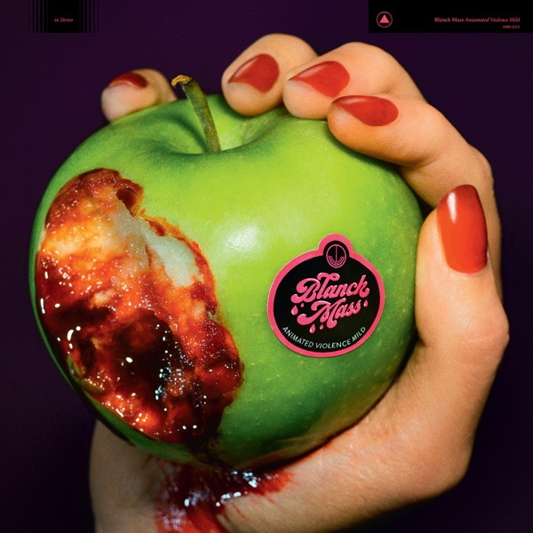
Blanck Mass
Animated Violence Mild
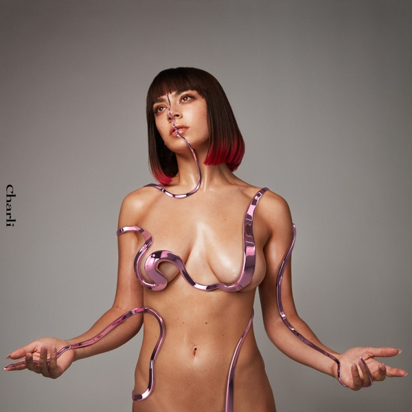
Charli XCX
Charli
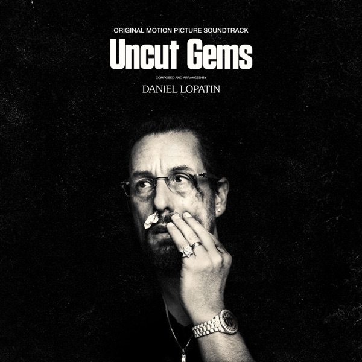
Daniel Lopatin
Uncut Gems Original Soundtrack
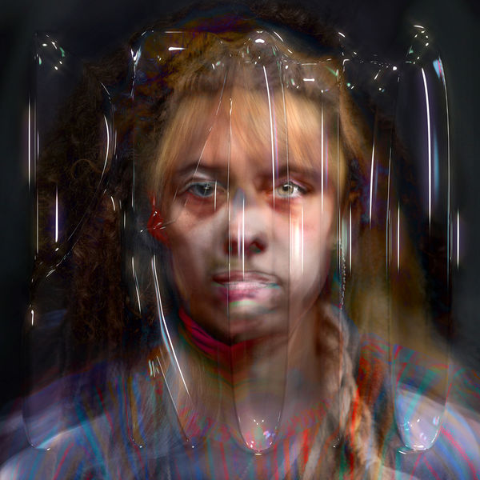
Holly Herndon
PROTO
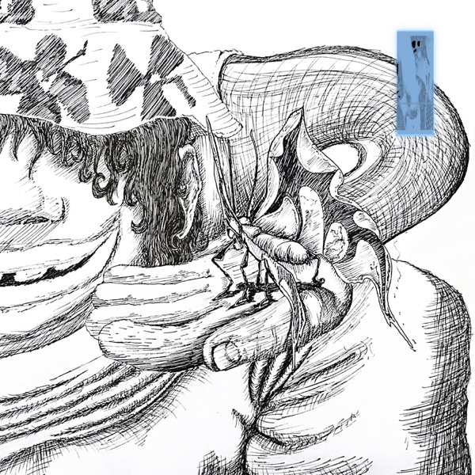
Oli XL
Rogue Intruder, Soul Enhancer
 SOPHIE
Oil Of Every Pearl's Un-Insides Remix Album
SOPHIE
Oil Of Every Pearl's Un-Insides Remix Album
Other Favorites
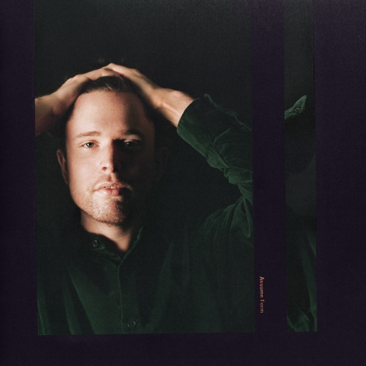
James Blake
Assume Form
4표 득표
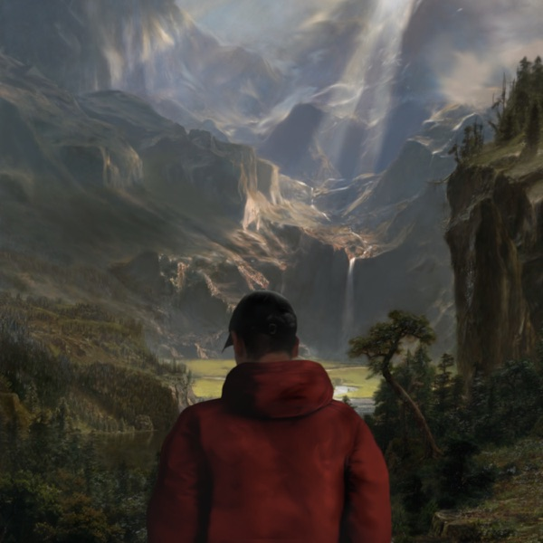
Kai Whiston
No World As Good As Mine
4표 득표
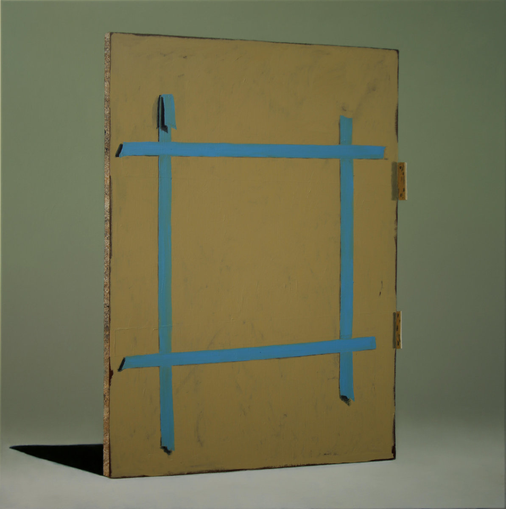
The Caretaker
Everywhere At The End Of Time - Stage 6
4표 득표
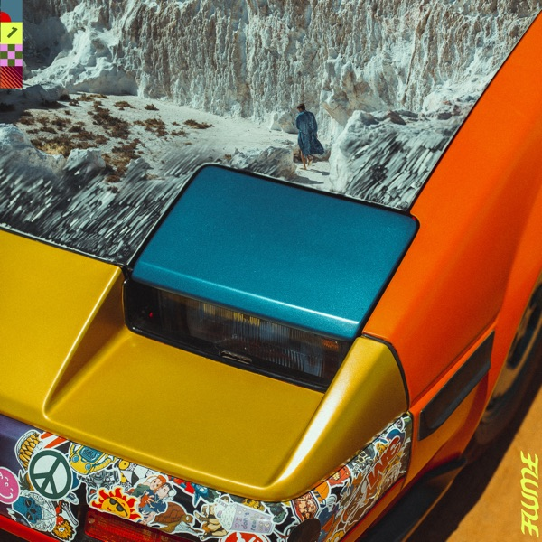
Flume
Hi This Is Flume
3표 득표
Top-tier Albums
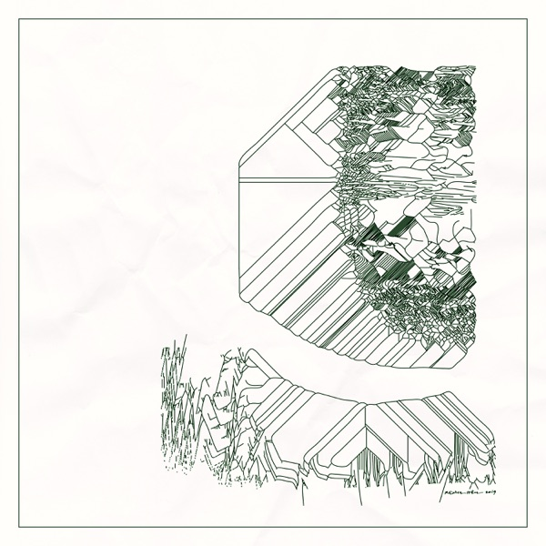
Max Cooper
Yearning For The Infinite
13표 득표
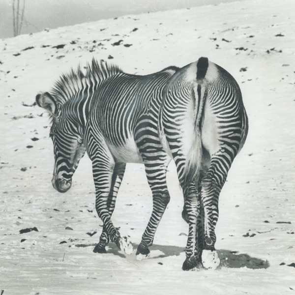
Andy Stott
It Should Be Us
7표 득표
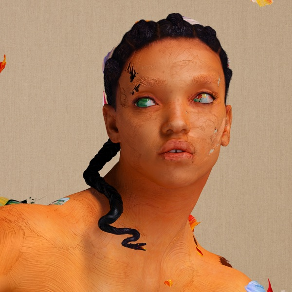
FKA Twigs
Magdalene
6표 득표
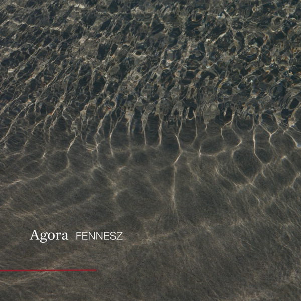
Fennesz
Agora
5표 득표
Album of the Year: Floating Points, Crush
총 20표를 얻은 Floating Points의 Crush가 2019년 전음갤 올해의 앨범으로 선정되었습니다.